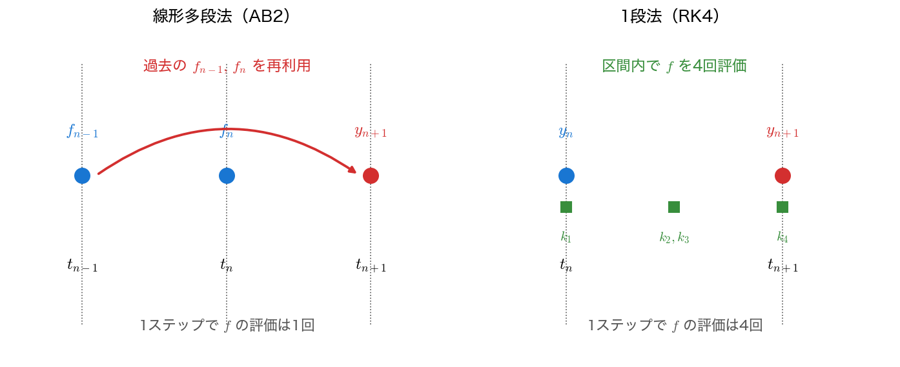
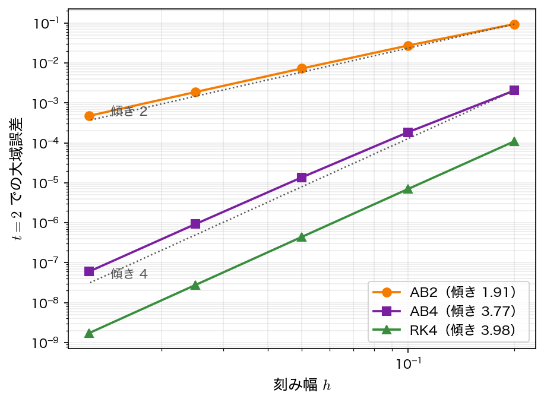

線形多段法
第4回の1段法は、\(y_{n+1}\) を求めたら過去の点を忘れて捨てていた。だが計算の途中で得た過去の傾き \(f_n, f_{n-1}, \dots\) はすでに手元にある。これを蓄えて再利用すれば、1ステップあたり右辺 \(f\) の評価を1回しか増やさずに高次精度が得られる。これが線形多段法（linear multistep method）である。代表格がアダムス法（Adams methods）で、陽的なアダムス＝バッシュフォース法と陰的なアダムス＝ムルトン法の2系列からなる。
一般形
\(k\) 段の線形多段法は、過去 \(k\) 点の \(y\) と \(f\) の線形結合で次の点を定める。
右辺に未知の \(f_{n+1} = f(t_{n+1}, y_{n+1})\) を含まない（\(b_0 = 0\)）なら陽的、含む（\(b_0 \neq 0\)）なら陰的である。「線形」とは \(y\) と \(f\) について線形結合だという意味で、\(f\) 自身は非線形でよい。
過去を使い回す——1段法との違い

陽的：アダムス＝バッシュフォース法
アダムス＝バッシュフォース法（Adams–Bashforth method, AB）は、\(y_{n+1} = y_n + h\sum b_j f_{n+1-j}\) の形で、過去の傾きから次を外挿する陽的多段法である。\([t_n, t_{n+1}]\) 上で \(y' = f\) を積分した
の被積分関数 \(f\) を、過去の点 \(f_n, f_{n-1}, \dots\) を通る補間多項式で置き換えて積分すると係数が定まる。
- 2段（AB2, 2次精度）：過去2点 \(f_n, f_{n-1}\) を1次式で補間して積分する。2点 \((t_{n-1}, f_{n-1})\) と \((t_n, f_n)\) を通る1次式は
である。これを \([t_n, t_{n+1}]\) で積分すると、\(\int_{t_n}^{t_{n+1}} (t - t_n)\,dt = h^2/2\) より
となる。これを積分形の右辺に入れると AB2 が得られる。
- 4段（AB4, 4次精度）：過去4点を3次式で補間する。
\(k\) 段のアダムス＝バッシュフォース法は \(k\) 次精度である。RK4 が同じ4次精度のために \(f\) を4回評価するのに対し、AB4 は1回で済む（過去3点はすでに計算済みだから）。
起動問題
多段法には弱点がある。AB2 は \(y_{n+1}\) を求めるのに \(f_n\) と \(f_{n-1}\) の2点が必要なので、最初のステップ（\(y_0\) から \(y_1\)）では \(f_{-1}\) が存在せず始められない。AB4 なら過去4点が要る。この起動問題（startup problem）を解くには、最初の数点を1段法（ふつう同じ次数の RK 法）で作ってから多段法に切り替える。本ページのコードでは起動に RK4 を使う。
多段法の長所と短所
長所：1ステップあたり \(f\) の評価が1回で高次（効率がよい）。短所：(1) 起動に別の手法が要る、(2) 刻み幅 \(h\) を途中で変えると過去点の間隔が崩れるため面倒、(3) 陽的多段法は安定領域がルンゲ＝クッタ法より狭い傾向がある（第6回）。
陰的：アダムス＝ムルトン法
右辺に未知の \(f_{n+1}\) も含めて補間すると、陰的なアダムス＝ムルトン法（Adams–Moulton method, AM）になる。同じ段数なら AB より1次高精度で、安定性もよい。
- 1段（AM1 = 台形則, 2次精度）：\(y_{n+1} = y_n + \dfrac{h}{2}(f_{n+1} + f_n)\)
- 2段（AM2, 3次精度）：\(y_{n+1} = y_n + \dfrac{h}{12}(5 f_{n+1} + 8 f_n - f_{n-1})\)
右辺に \(f_{n+1} = f(t_{n+1}, y_{n+1})\) があるため \(y_{n+1}\) について陰的な方程式になる。その解き方と、最も基本的な陰的解法（後退オイラー法・台形則）は次の陰的解法で扱う。AM をそのまま反復で解く代わりに、AB の予測値で1回だけ修正する実用的な使い方が予測子・修正子法である。
AM1 は、区間の両端の \(f_n\) と未知の \(f_{n+1}\) を1次式で補間して積分すれば導ける。2点 \((t_n, f_n)\) と \((t_{n+1}, f_{n+1})\) を通る1次式は
である。AB2 と同じく \(\int_{t_n}^{t_{n+1}} (t - t_n)\,dt = h^2/2\) より
となり、積分形の右辺に入れると台形則が得られる。
AB2 との違いは、補間に使う2点だけである。AB2 は \(t_{n-1}, t_n\) の値で作った1次式を区間 \([t_n, t_{n+1}]\) へ延ばして使う（外挿）。AM1 は区間の両端の値で作るので、区間の内側だけで使う（内挿）。
サンプルコード
例題1（\(y' = y - t^2 + 1\)、\(y(0)=0.5\)）を AB2 と AB4 で解く。起動は RK4。前半で \(h = 0.2\) の AB2 を各時刻表示し、後半で \(h\) を半減させて \(t=2\) の大域誤差と誤差比から収束次数（AB2 は2次、AB4 は4次）を確認する。f・exact・rk4_step は第4回の RK4 のサンプルの関数をそのまま写したもので、手法として新たに加えるのは AB2・AB4 の1ステップ ab2_step・ab4_step である。\(t=2\) まで解く ab2_at2・ab4_at2 は、起動に rk4_step を、ループの中でこれらを呼ぶ。ab2_at2 は \(y_1\) を RK4 で作ってから AB2 に切り替える。ループの中で \(f\) を呼ぶのは、新しい点の傾きを求める1回だけである。ab4_at2 は起動の3点 \(y_1, y_2, y_3\) を RK4 で作る。ループでは配列 ff を1つずつずらし、空いた ff[3] に新しい傾きを入れる。
#include <stdio.h>
#include <math.h>
/* 例題1: y' = y - t^2 + 1, y(0) = 0.5, t in [0,2] */
/* 厳密解: y(t) = (t+1)^2 - 0.5 e^t */
double f(double t, double y) { return y - t*t + 1.0; }
double exact(double t) { return (t+1.0)*(t+1.0) - 0.5*exp(t); }
/* 古典的 RK4 の1ステップ: y_n から y_{n+1} を返す */
double rk4_step(double t, double y, double h)
{
double k1 = f(t, y);
double k2 = f(t + h/2.0, y + h/2.0*k1);
double k3 = f(t + h/2.0, y + h/2.0*k2);
double k4 = f(t + h, y + h*k3);
return y + h/6.0*(k1 + 2.0*k2 + 2.0*k3 + k4);
}
/* AB2 の1ステップ: y_{n+1} = y_n + (h/2)(3 f_n - f_{n-1}) を返す */
double ab2_step(double y, double h, double fn, double fnm1)
{
return y + h/2.0*(3.0*fn - fnm1);
}
/* AB4 の1ステップ:
y_{n+1} = y_n + (h/24)(55 f_n - 59 f_{n-1} + 37 f_{n-2} - 9 f_{n-3}) を返す */
double ab4_step(double y, double h, double fn, double fnm1, double fnm2, double fnm3)
{
return y + h/24.0*(55.0*fn - 59.0*fnm1
+ 37.0*fnm2 - 9.0*fnm3);
}
/* AB2 で t=0 から t=2 まで解き、y(2) を返す。起動 y_1 は RK4 で作る */
double ab2_at2(double h)
{
int N = (int)(2.0/h + 0.5);
double y0 = 0.5;
double y1 = rk4_step(0.0, y0, h); /* 起動 */
double fnm1 = f(0.0, y0); /* f_{n-1} */
double fn = f(h, y1); /* f_n */
double y = y1;
for (int n = 1; n < N; n++) {
double ynext = ab2_step(y, h, fn, fnm1);
double t = (n + 1)*h;
fnm1 = fn;
fn = f(t, ynext);
y = ynext;
}
return y;
}
/* AB4 で t=0 から t=2 まで解き、y(2) を返す。起動 y_1, y_2, y_3 は RK4 で作る */
double ab4_at2(double h)
{
int N = (int)(2.0/h + 0.5);
double y[4]; /* 直近4点の y（リングは使わず素直に） */
double ff[4]; /* 対応する f */
y[0] = 0.5;
for (int i = 0; i < 3; i++) y[i+1] = rk4_step(i*h, y[i], h);
for (int i = 0; i < 4; i++) ff[i] = f(i*h, y[i]);
/* ff[3]=f_n, ff[2]=f_{n-1}, ff[1]=f_{n-2}, ff[0]=f_{n-3} */
double yn = y[3];
for (int n = 3; n < N; n++) {
double ynext = ab4_step(yn, h, ff[3], ff[2], ff[1], ff[0]);
double t = (n + 1)*h;
ff[0] = ff[1]; ff[1] = ff[2]; ff[2] = ff[3];
ff[3] = f(t, ynext);
yn = ynext;
}
return yn;
}
/* 詳細表示用: AB2 を h=0.2 で各時刻の値を出す */
void ab2_table(double h)
{
int N = (int)(2.0/h + 0.5);
double y0 = 0.5;
double y1 = rk4_step(0.0, y0, h);
printf(" t y_AB2 y_exact |error|\n");
printf("--------------------------------------------------\n");
printf("%4.1f %12.8f %12.8f %10.3e (起動: y0)\n", 0.0, y0, exact(0.0), fabs(y0-exact(0.0)));
printf("%4.1f %12.8f %12.8f %10.3e (起動: RK4)\n", h, y1, exact(h), fabs(y1-exact(h)));
double fnm1 = f(0.0, y0), fn = f(h, y1), y = y1;
for (int n = 1; n < N; n++) {
double ynext = ab2_step(y, h, fn, fnm1);
double t = (n + 1)*h;
printf("%4.1f %12.8f %12.8f %10.3e\n", t, ynext, exact(t), fabs(ynext-exact(t)));
fnm1 = fn; fn = f(t, ynext); y = ynext;
}
}
int main(void)
{
printf("=== AB2 詳細 (h=0.2) ===\n");
ab2_table(0.2);
printf("\n=== 収束次数: t=2 大域誤差と誤差比 ===\n");
double ye = exact(2.0);
double hs[] = {0.2, 0.1, 0.05, 0.025, 0.0125};
printf("厳密解 y(2) = %.8f\n\n", ye);
FILE *fp = fopen("multistep.dat", "w"); /* 作図用データ */
if (fp == NULL) { perror("multistep.dat"); return 1; }
fprintf(fp, "# h err_ab2 err_ab4\n");
printf(" h AB2 err ratio AB4 err ratio\n");
printf("---------------------------------------------------------\n");
double p2 = 0, p4 = 0;
for (int i = 0; i < 5; i++) {
double e2 = fabs(ab2_at2(hs[i]) - ye);
double e4 = fabs(ab4_at2(hs[i]) - ye);
fprintf(fp, "%.10e %.10e %.10e\n", hs[i], e2, e4);
printf("%9.4f %10.3e", hs[i], e2);
if (i) printf(" %6.2f", p2/e2); else printf(" -- ");
printf(" %10.3e", e4);
if (i) printf(" %6.2f", p4/e4); else printf(" -- ");
printf("\n");
p2 = e2; p4 = e4;
}
fclose(fp);
return 0;
}
コンパイルと実行：
実行結果
=== AB2 詳細 (h=0.2) ===
t y_AB2 y_exact |error|
--------------------------------------------------
0.0 0.50000000 0.50000000 0.000e+00 (起動: y0)
0.2 0.82929333 0.82929862 5.288e-06 (起動: RK4)
0.4 1.21608133 1.21408765 1.994e-03
0.6 1.65397640 1.64894060 5.036e-03
0.8 2.13656119 2.12722954 9.332e-03
1.0 2.65613190 2.64085909 1.527e-02
1.2 3.20331535 3.17994154 2.337e-02
1.4 3.76669677 3.73240002 3.430e-02
1.6 4.33237427 4.28348379 4.889e-02
1.8 4.88341687 4.81517627 6.824e-02
2.0 5.39920450 5.30547195 9.373e-02
=== 収束次数: t=2 大域誤差と誤差比 ===
厳密解 y(2) = 5.30547195
h AB2 err ratio AB4 err ratio
---------------------------------------------------------
0.2000 9.373e-02 -- 2.036e-03 --
0.1000 2.718e-02 3.45 1.846e-04 11.03
0.0500 7.257e-03 3.75 1.368e-05 13.49
0.0250 1.870e-03 3.88 9.282e-07 14.74
0.0125 4.744e-04 3.94 6.041e-08 15.36
詳細表で、起動の \(y_1\)（\(t=0.2\)）は RK4 で作ったため誤差 \(5\times10^{-6}\) と小さいが、その後 AB2 の誤差が積み重なり \(t=2\) で \(9.4\times10^{-2}\) になる。
収束次数の表では、\(h\) を半分にするたびに AB2 の誤差比が \(4\)（\(=2^2\)）、AB4 の誤差比が \(16\)（\(=2^4\)）に近づく。実測の比は AB2 が \(3.45\to3.94\)、AB4 が \(11.0\to15.4\) で、\(h\) を細かくするほど理論値に近づいており、AB2 が2次・AB4 が4次精度であることが確認できる（起動や高次項の影響で粗い \(h\) ではやや小さめに出る）。

可視化
mss.c は収束次数の表と同じ値を multistep.dat にも書き出す（1列目が \(h\)、2列目が AB2、3列目が AB4 の \(t=2\) での大域誤差）。
import numpy as np
import matplotlib.pyplot as plt
h, e_ab2, e_ab4 = np.loadtxt("multistep.dat", unpack=True)
fig, ax = plt.subplots(figsize=(6.5, 5))
for err, label, marker in ((e_ab2, "AB2", "o"), (e_ab4, "AB4", "s")):
slope = np.polyfit(np.log(h), np.log(err), 1)[0]
ax.loglog(h, err, marker + "-", ms=5, label=f"{label} (slope {slope:.2f})")
for p in (2, 4): # 傾き 2, 4 の基準線
ax.loglog(h, h ** p, "k:", lw=1)
ax.set_xlabel("step size $h$")
ax.set_ylabel("global error at $t = 2$")
ax.set_title("Adams-Bashforth: order = slope")
ax.grid(alpha=0.3, which="both")
ax.legend()
fig.tight_layout()
fig.savefig("multistep.png", dpi=150)
plt.show()
実行:
AB2 は傾き \(2\)、AB4 は傾き \(4\) の基準線に沿う。第4回の RK4 と同じ描き方なので、accuracy.dat も一緒に読み込めば「同じ4次でも AB4 のほうが誤差が大きい」ことも確かめられる。